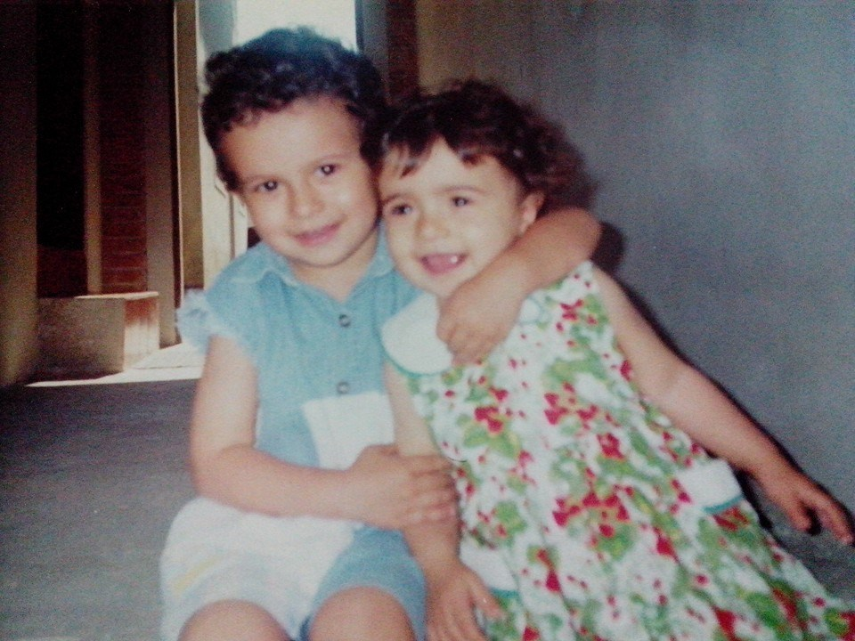
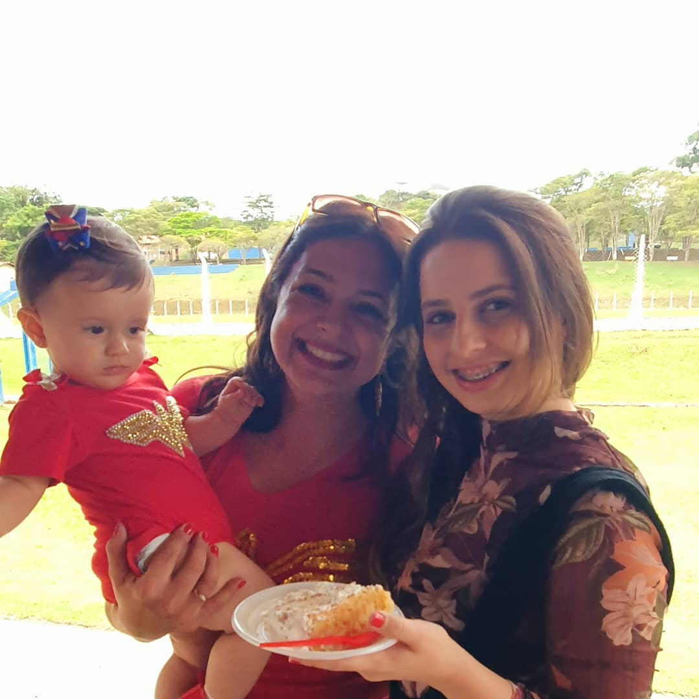
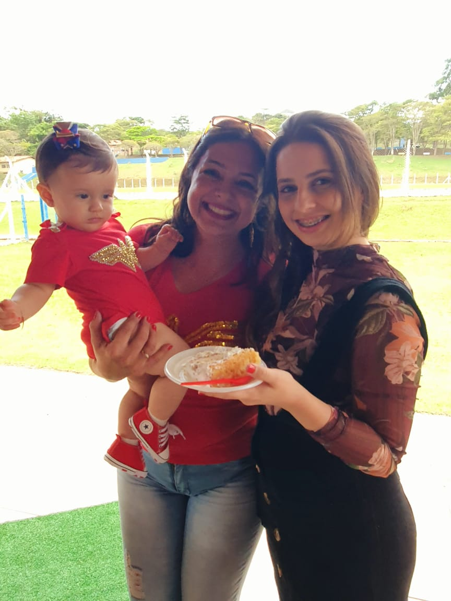
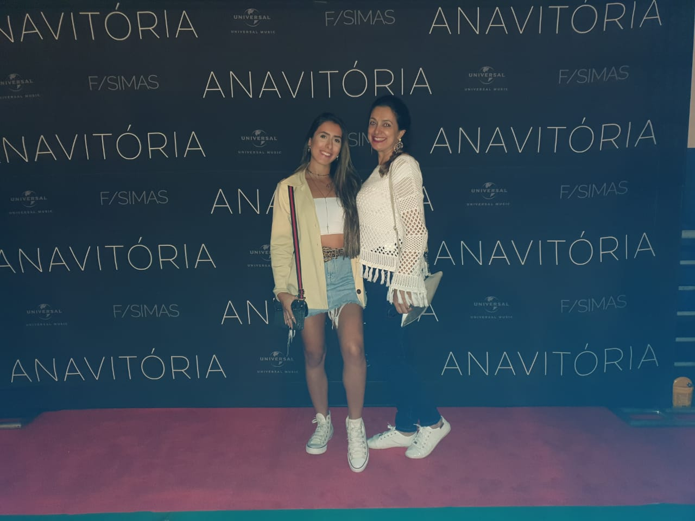

Acho linda as infinitas formas de amor. Acho incrível a singularidade que há na forma de amar. Os poetas desbravam amor romântico. Os religiosos clamam amor por Deus. Os fãs manifestam amor platônico. Os exultantes transbordam amor próprio. Mas, ainda sim, dentre todas as formas possíveis de amar, àquela primária: o amor de mãe. Aquele do tipo que gera vida. Que, por um tempo, doa sua própria vida. Aquele do tipo que apresenta o mundo e, se for possível, te dá o mundo. Ainda que dentro desse tipo de amor, há diversas formas de amar. Distintas linguagens de amor. Singular de cada mulher. Ainda sim, amor-de-mãe.
Amor
Gratidão
Carinho
O c i t o c i n a. Para a ciência, hormônio que produz as contrações durante o parto, sendo responsável também pela secreção e produção de leite.
O c i t o c i n a. Para o dicionário, conhecido como "hormônio do amor" por possuir propriedades ligadas ao vínculo afetivo entre mãe e filho.
O c i t o c i n a. Para mim, o que se expressa nos detalhes e nas grandezas, o que se faz presente em todas as circunstâncias, o que não cabe em palavras, há apenas a tentativa de expressá-la tamanha sua imensidão: Eu te amo, mãe.